在逆全球化思潮暗流涌动的当下，大疆的实践证明：真正的品牌力，是技术突破与文化共鸣的双螺旋上升，是商业价值与人类文明的共生共荣
在第四次工业革命浪潮中，人工智能、大数据、云计算、5G 网络与信息技术的深度融合，推动全球产业升级进入加速度发展阶段，同时深刻重构了人类社会的生产生活范式。作为智能经济时代最具发展潜力的新兴产业之一，无人机行业在智能化、自动化浪潮中快速崛起，实现了从军事领域向民用市场的战略延伸，形成了消费级与工业级市场协同发展的产业格局。
作为行业领军企业，大疆创新科技有限公司自 2006 年于深圳创立以来，始终专注于智能飞行控制系统及无人机解决方案的研发制造。通过持续的技术创新和产业深耕，该公司已构建起覆盖无人机工业应用、行业用户需求及专业航拍领域的完整产品矩阵。凭借强大的技术研发实力和专利壁垒，大疆目前占据全球超过 80% 的市场份额，其产品广泛应用于航拍、农业、物流、安防等领域，成为全球无人机产业生态的核心构建者。
网络赋能大疆美国市场品牌力的策略
在互联网技术和社交平台的推动下，品牌塑造和推广早已跳出传统广告模式，转向线上全渠道覆盖、用户深度互动的新形态。以大疆创新（DJI）为例，这家科技公司巧妙借力互联网，通过各种数字化营销手段，成功把品牌塑造成全球消费级无人机的代表。接下来，我们将从社交媒体运营、内容营销、用户共创等多个维度，探讨它是如何在全球市场快速树立起强势品牌形象的。

图1 大疆联合影像团队8 KRAW成功登顶珠穆朗玛峰
社交媒体营销：扩大品牌影响力
大疆在品牌传播方面，特别擅长玩转YouTube、Instagram这些全球热门社交平台。首先，他们在YouTube上发布各种无人机使用场景的视频，特别是那些高质量的航拍视频，不仅秀出了产品的拍摄能力，还把无人机的操作便捷性和画质优势直观地展现在观众面前。比如有人用无人机拍到雪山之巅的绝美日出，有人记录了城市天际线的流光溢彩，这些画面让观众感觉“哇，原来无人机还能这么用”，自然就对产品产生了兴趣。
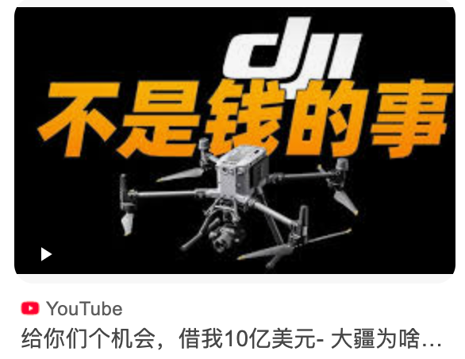
图2 大疆无人机玩转YouTube
此外，大疆还通过Instagram发布了一系列美学质感极高的照片和短视频，进一步巩固其在摄影爱好者和旅游达人中的知名度和美誉度。这些平台的多媒体展示形式不仅便于用户分享和传播，还能更精准地触达目标用户群体，从而扩大品牌影响力。
值得一提的是，大疆还在Twitter上积极与用户互动，解答产品相关问题，提升产品的曝光率与讨论度。大疆选择了多位在社交媒体上有广泛影响力的摄影师和技术爱好者，通过他们的真实体验分享，引导潜在消费者了解并接受大疆无人机。通过真实使用场景展示，大疆不仅能够精准地将信息传递给目标消费群体，还在消费者心目中建立了专业可信的品牌形象。
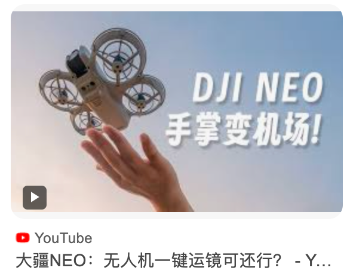
图3 大疆无人机的摄影宣传
KOL与品牌合作：多元化推广策略
大疆在品牌推广中广泛应用了KOL合作的营销方式。通过与知名摄影师、电影制片人、旅游博主等在社交媒体上具有广泛影响力的意见领袖合作，大疆有效地扩大了品牌覆盖范围。例如，大疆与国际知名摄影师和影视制作人合作，展示其无人机在航拍、短视频制作、纪录片拍摄等方面的优越表现，这一策略让更多专业用户看到了大疆无人机的潜力和应用场景。
大疆还通过与大型电影和纪录片合作，将其无人机技术融入到影视作品中。例如，《时代周刊》和《纽约时报》等知名媒体对大疆无人机进行专题报道，将其视为改变航拍摄影模式的重要科技产品。这些合作不仅大幅提升了品牌的曝光度，也增强了大疆产品在用户心目中的专业性和可信度，使其逐渐成为消费级无人机市场的标杆品牌。
图4 时代杂志对大疆无人机的报道
此外，大疆在影视娱乐中的深度合作，使其产品能够自然地融入到不同的文化中，从而影响了更为广泛的用户群体。通过这些文化符号的嵌入，大疆不仅提升了产品的辨识度，还让品牌形象深植于消费者心中。这种借力合作的策略，帮助大疆在不同行业和领域中树立了专业可信的品牌形象，扩大了市场的覆盖范围，强化了品牌的国际影响力。
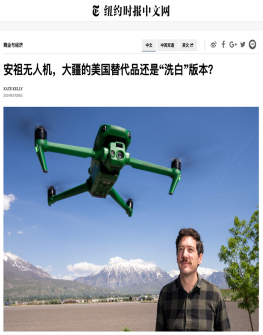
图5 日益增长的国际影响力
内容营销：传递品牌价值观
大疆在互联网策略中，他们在社交媒体账号上定期更新无人机使用教程、产品新功能介绍和航拍小技巧，手把手教用户玩转产品。这种内容不仅增强了用户粘性，也让大疆成为了无人机领域的专业权威，建立了品牌的可信度。
尤其在YouTube平台，大疆通过内容营销，创建了包含产品教程、使用案例和无人机行业资讯的内容库，使其成为消费者了解无人机知识的重要渠道，进一步提升了品牌的专业形象。
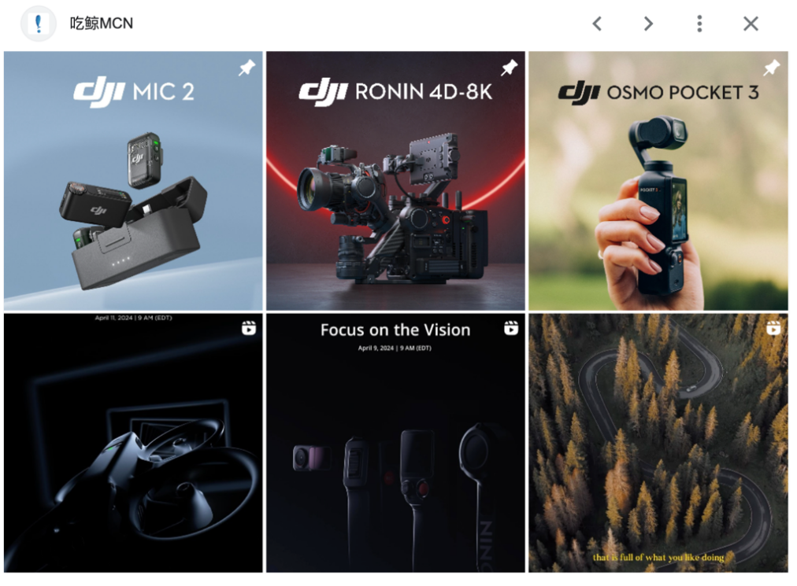
图6 大疆内容营销系列矩阵
在内容营销方面，大疆还通过情感共鸣来提升用户忠诚度。许多大疆发布的视频不仅仅是产品展示，而是通过美丽的航拍画面展现世界各地的自然风光、人文景观等，这种视觉体验让用户更容易产生情感上的共鸣，增强了品牌的亲和力。在用户心中，大疆不再仅是拍摄工具，更是一种记录生活、分享美好的科技设备。这种品牌定位成功地吸引了大量忠实用户。
数据分析与个性化推荐：精准触达用户
大疆在网络营销中还积极利用大数据分析和个性化推荐技术，通过对用户浏览数据、购买行为和互动情况的分析，精准触达目标用户。例如，大疆通过用户数据分析了解到潜在客户的偏好，向他们推送符合其兴趣的内容和产品信息。
同时，大疆还在官网和社交媒体上嵌入智能推荐系统，根据用户的浏览习惯、地域特征等，为不同用户推荐不同的产品和服务。这样的精准触达策略使得大疆能够在激烈的市场竞争中快速找到潜在客户，提升用户体验和转化率。
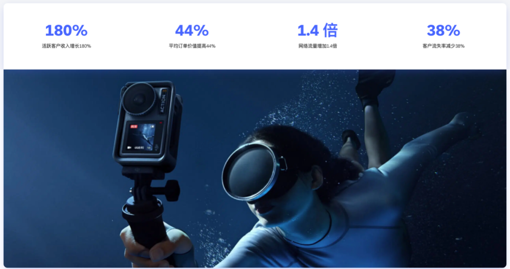
图7 大疆通过Emarsys个性化推荐提升客户忠诚度,实现营收增长
此外，大疆在网络广告投放中同样运用了数据分析手段。通过大数据分析用户画像，大疆可以在不同的社交媒体平台投放个性化广告，有效地提升了广告的精准度和转化效果。个性化推荐和精准投放的结合，使得大疆的品牌营销更加高效，在目标市场中赢得了更高的用户关注度和市场转化率。
大疆品牌差异化分析
在全球消费级无人机市场中，大疆创新科技有限公司（DJI）凭借其独特的品牌差异化策略，成功在竞争激烈的环境中脱颖而出。品牌差异化的关键在于找到企业核心优势并与目标市场的需求精确对接，大疆在技术、产品定位、用户体验等方面所采取的差异化策略，使其不仅在消费级无人机领域建立了牢固地位，更成为全球市场的标杆品牌。下面我们就从技术创新、产品矩阵布局、用户体验和品牌文化四个方面，拆解大疆如何一步步打造出品牌护城河。
技术创新驱动差异化：掌握核心技术
技术创新是大疆在无人机市场中实现品牌差异化的基石。大疆自创立以来，便以技术创新为驱动力，通过对飞控系统、图像传输系统、智能功能等核心技术的不断突破，实现了无人机从操作便捷性到影像质量的全面提升。
大疆在飞控技术领域的研发，不仅保障了其无人机的稳定飞行和自主控制，还提升了无人机在复杂环境中的适应能力。这一优势让大疆产品能提供超高质量的影像和精确的飞行控制，特别是在航拍、应急救援和工程测绘等专业应用中具有重要作用，使其在专业无人机市场中也有极高的认可度
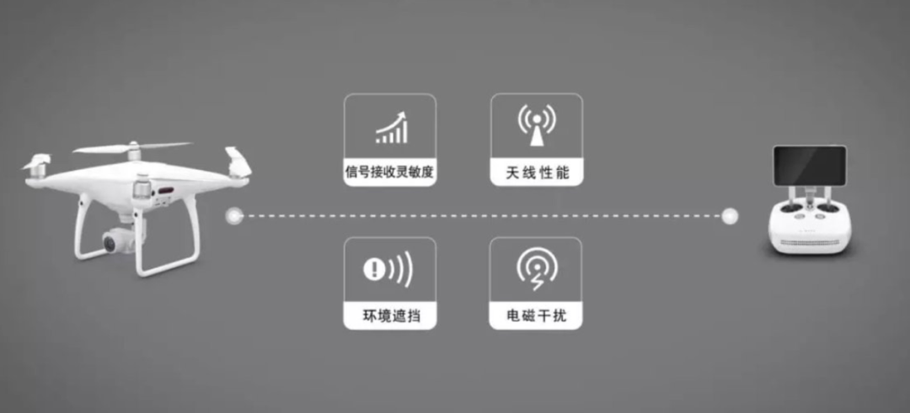
图8 大疆图像传输四大核心性能
此外，大疆不断推动图像传输技术的进步，实现了长距离、低延迟的实时传输，使无人机用户在拍摄过程中能够即时观看高质量视频。大疆在图像传输技术上的突破，不仅满足了专业用户对实时影像传输的需求，也为普通消费者提供了卓越的视觉体验，使大疆产品在用户心目中有着超高的品牌附加值。这一差异化技术战略不仅增强了大疆的产品竞争力，也奠定了其在全球消费级无人机市场中的技术领先地位。
产品线多元化布局：满足不同用户需求
大疆通过多元化的产品线布局，满足了各类用户的差异化需求，形成了强大的市场竞争力。其产品线涵盖了多个系列，从高端的Inspire系列到面向大众市场的Mavic系列和入门级Spark系列，不仅覆盖了从专业摄影师到普通消费者的广泛需求，还通过多层次产品布局形成了对竞争对手的显著优势。
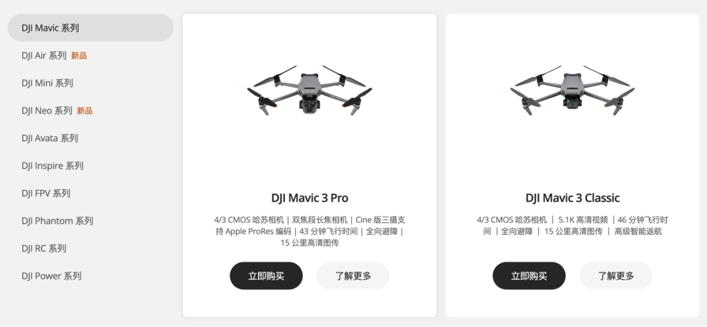
图9 大疆产品系列汇总
在产品差异化布局方面，大疆不仅注重功能的多样性，还关注用户体验的优化。比如大疆的“御”系列（Mavic）不仅操作简单、具备便携性，还配备了智能跟随、手势控制、障碍感知等智能化功能，降低了用户的操作门槛，让入门用户也能轻松上手。
同时，大疆的产品具有较高的性价比，相比其他高端无人机品牌，其产品的价格更加亲民，这一策略吸引了大量潜在消费者，进一步提升了品牌的市场占有率。这种产品线的分层布局不仅有效地拓展了市场范围，也使大疆能够在竞争激烈的消费级无人机市场中实现品牌的差异化定位。
用户体验创新：打造极致消费体验
为了在品牌竞争中脱颖而出，大疆从用户体验角度进行了一系列创新，旨在提供便捷、高质量的产品体验。大疆不仅在硬件上提供高水准的用户体验，还通过软件升级和配套应用进一步提升了用户的使用便利性。例如，大疆开发了DJI GO应用程序，用户可以通过该应用实时查看无人机传输的高清画面、设定飞行路线、调整拍摄参数，并一键分享拍摄内容，这种人性化设计使得无人机使用不再局限于专业人员，也受到了普通消费者的广泛欢迎。
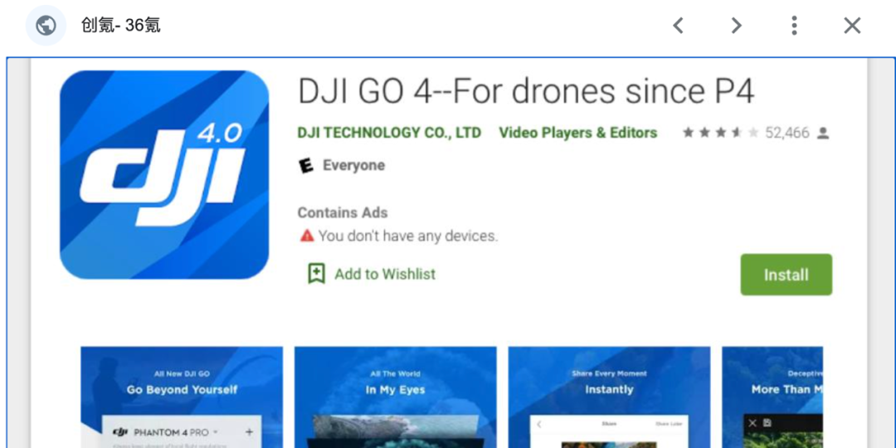
图10 大疆DJI GO软件介绍
此外，大疆无人机还搭载了多种智能飞行模式，包括智能跟随、指点飞行、延时拍摄等，使无人机用户在不同场景下都能够轻松拍摄高质量的影像。在航拍和影像记录上，大疆还引入了自动避障、精准返航等功能，确保用户即便在复杂环境中操作无人机也能获得安全稳定的飞行体验。这种细致的用户体验设计，让大疆产品在使用便捷性上明显优于其他竞争品牌，进一步提升了品牌的市场认可度和用户忠诚度。
品牌文化差异化：构建用户情感联结
品牌文化是企业差异化的重要组成部分，而大疆通过构建品牌文化，不仅提升了产品的市场影响力，也为品牌带来了更深层次的用户情感联结。大疆通过RoboMaster机甲大师赛等活动，在年轻人群体中推广科技创新的品牌形象。这项赛事吸引了全球科技爱好者和大学生的参与，不仅展示了大疆的技术实力，还传播了品牌的“探索科技、创新无界”的核心价值观。赛事中的竞赛文化让大疆品牌在全球范围内逐渐成为无人机创新和科技进步的象征，吸引了大批年轻的科技爱好者，使其成为品牌的忠实支持者。
同时，大疆积极参与全球范围内的展会和行业论坛，通过与专业用户的互动和技术交流，进一步增强了品牌的权威性和专业性。品牌文化的传递不仅限于科技爱好者和专业用户，大疆还通过摄影大赛、航拍大赛等活动吸引普通消费者，让他们感受到品牌的科技魅力和影像艺术的感染力。这种通过品牌文化建立的情感联结使大疆品牌在用户心中不仅是一款科技产品，更是一种生活方式和价值观的象征，这种差异化的品牌定位在全球市场中进一步稳固了大疆的竞争地位。
大疆在美国市的品牌显著性策略分析
在全球消费市场中，大疆创新科技有限公司（DJI）通过品牌显著性策略树立了清晰的市场形象，使其在激烈的竞争中脱颖而出。显著性策略不仅是增加品牌曝光度和市场渗透率的手段，更是通过品牌在消费者心中建立持久、独特的认知印记，使消费者在面对多种选择时优先考虑大疆。大疆的品牌显著性策略具体体现在这些方面：用户为中心的品牌策略、开放创新与跨界合作、专利保护与技术壁垒。
以用户为中心的品牌策略：增强用户粘性和忠诚度
在品牌显著性策略中，大疆注重以用户为中心，通过定期的品牌活动、用户反馈机制和持续优化的售后服务，提升用户体验，增强品牌忠诚度。例如，大疆每年在全球范围内举办“飞行者摄影大赛”和“无人机航拍作品展”等活动，鼓励用户使用大疆无人机进行创意拍摄。这些活动不仅增强了品牌的社交属性，也让用户对品牌形成了情感上的依赖和认同。
图11 大疆天空之城摄影大赛海报
大疆还设立了完善的用户反馈机制，倾听用户的需求并针对性地优化产品和服务。用户不仅可以通过官方网站、社交媒体留言等途径反馈使用问题，大疆还定期更新其应用程序（如DJI GO）并发布固件升级，以确保产品性能的持续提升。通过这种用户为中心的品牌策略，大疆成功强化了品牌与用户之间的互动，进一步提高了用户的品牌忠诚度和粘性，使得品牌在市场中更具显著性。
开放创新与跨界合作：拓展品牌影响力
大疆通过跨界合作和开放创新的策略，不断扩大品牌的市场触角，进一步提升品牌的显著性。例如，大疆与各类知名品牌和企业合作，将其无人机技术融入到不同领域，如影视拍摄、新闻报道、农业监控、智能物流等，通过在多个行业的布局，让消费者在不同场景中都能接触到大疆品牌，强化品牌的认知度。
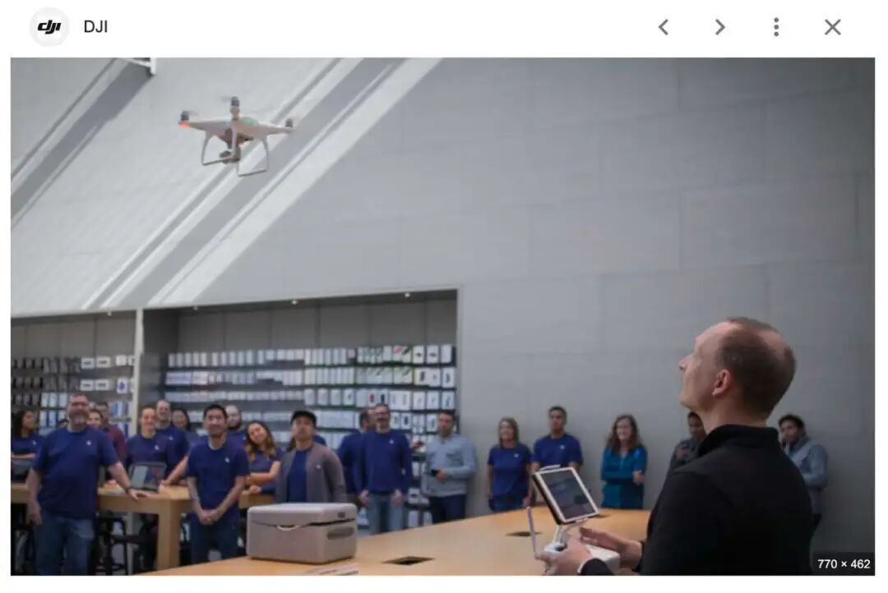
图12 大疆无人机与APPLE苹果跨界营销活动
在影视领域，大疆与电影制作公司合作拍摄高质量的航拍镜头，使其产品出现在如《碟中谍》等知名电影中。这种跨界合作不仅为品牌带来了高质量的市场曝光，还让大疆产品成为专业影视器材的代表性工具。通过跨界合作，大疆不仅将品牌影响力扩展至更多的行业，还为品牌增加了知名度。
专利保护与技术壁垒：构筑品牌护城河
大疆在品牌差异化过程中，充分意识到专利保护和技术壁垒的重要性，通过不断扩展技术专利，构建了牢固的品牌护城河。无人机行业的核心技术包括飞控系统、图像传输、云台技术等，大疆在这些领域不仅掌握了多项自主知识产权，还将其技术优势转化为专利壁垒，以阻止竞争对手的模仿和抄袭。
根据报告数据，2021年3月，DJI在无人机市场上的专利数量已居行业首位。通过这些专利的保护，大疆在全球范围内确立了技术领先的地位，同时也有效防范了市场上的侵权行为，使其能够在市场中保持差异化竞争优势。
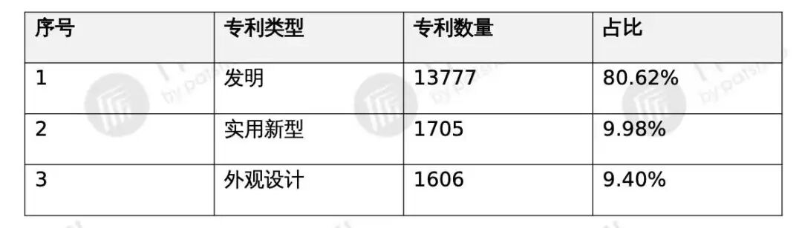
表1 大疆无人机专利分布分析
大疆还通过建立完善的知识产权保护体系，在专利申请和保护方面投入大量资源，使其产品始终保持在技术和创新方面的领先优势。专利保护不仅增强了企业的核心竞争力，还提高了市场进入的门槛，使竞争对手难以通过模仿实现快速追赶，从而进一步巩固了大疆品牌在全球消费级无人机市场中的领先地位。
大疆案例对高科技企业互联网时代品牌塑造力的启示
在第四次工业革命浪潮推动着各行业变革、全球化进程加速以及网络经济蓬勃兴起的当下，大疆创新科技有限公司充分借助互联网优势，实施多元化数字营销策略构建卓越品牌力。它为高科技企业在网络时代借助互联网塑造品牌力提供了极具价值的借鉴范例，其中包括网络赋能构建品牌力、差异化铸就核心竞争力、品牌显著性巩固市场地位。
网络赋能策略成效显著
在网络经济主导的美国市场环境中，大疆巧妙运用多种网络赋能策略构建品牌力。社交媒体营销方面，积极利用各大社交平台的传播力，制定针对性的推广方案，使品牌信息迅速扩散，吸引大量潜在消费者关注，极大地拓展了品牌的辐射范围。
与KOL的合作则精准定位不同消费群体，借助KOL的专业形象与粉丝信任，实现了多元化的品牌推广，有效提升了品牌知名度与美誉度。内容营销通过富有创意和深度的内容创作，如精彩的航拍作品展示、技术解析文章等，生动地传递了大疆的品牌价值观，塑造了品牌的高端形象与科技内涵，使消费者对大疆品牌产生强烈的认同感。
同时，数据分析与个性化推荐的运用让大疆深入洞察用户需求，为用户量身定制产品推荐与营销信息，实现精准触达，显著提高了营销转化率与用户参与度，从而奠定了其在美国市场强大品牌力的网络基础。
品牌差异化铸就核心竞争力
大疆在美国市场的品牌差异化策略是其保持领先地位的关键要素。技术创新始终处于核心地位，大疆持续加大研发投入，成功掌握了一系列无人机核心技术，从飞控系统到图像传输技术等多方面的突破，使其产品在性能、稳定性和创新性上远超同行，在技术层面形成了难以逾越的差异化优势。
大疆产品线的多元化布局也满足了美国市场不同层次、不同用途的用户需求，无论是用于影视拍摄的高端专业机型，还是面向普通爱好者的入门级产品，都能提供优质的解决方案，拓宽了品牌的市场覆盖面。
在用户体验创新上，大疆从产品设计的人性化、操作的简易性到售后服务的及时性与专业性，全方位打造极致消费体验，增强了用户对品牌的好感与信任。此外，独特的品牌文化注重科技与人文的融合，通过举办各类无人机文化活动、社区互动等方式，与用户建立起深厚的情感联结，进一步强化了品牌的差异化特征，使大疆成为美国消费者心中无人机领域独一无二的品牌选择。
品牌显著性巩固市场地位
大疆在美国市场通过一系列品牌显著性策略巩固了其市场地位。以用户为中心的品牌策略贯穿运营始终，深入研究美国用户的消费习惯与偏好，不断优化产品功能与服务细节，通过优质的产品体验和良好的用户口碑，极大地增强了用户粘性和忠诚度，使得品牌在用户群体中具有极高的复购率和推荐率，品牌影响力得以持续扩大。
开放创新与跨界合作成为拓展品牌影响力的重要途径，大疆积极与美国本土的影视制作公司、科研机构、教育机构等开展合作，共同探索无人机在不同领域的应用创新，不仅丰富了产品的应用场景，还借助合作方的资源与渠道，将品牌推广至更广泛的受众群体，提升了品牌的社会知名度与行业影响力。
再者，专利保护与技术壁垒的构建为大疆构筑了坚实的品牌护城河，大量的核心技术专利使竞争对手难以在短时间内模仿其产品与技术，有效保护了品牌的独特性与市场份额，确保了大疆在美国无人机市场的显著性地位，使其在长期竞争中始终处于优势地位并引领行业发展方向。
结语
在第四次工业革命的浪潮中，大疆以技术创新为桨、数字营销为帆，在全球化竞争的海洋中开辟出独特航道。这家从深圳崛起的科技企业，不仅用无人机重新定义了人类的视角，更通过互联网时代的品牌战略重构了高科技企业的成长范式。其成功不仅在于占据80%的全球市场份额，更在于将"中国智造"的标签转化为全球消费者的情感认同。
当无人机掠过美国大峡谷的壮丽景观，当大疆的 LOGO 出现在好莱坞电影的镜头里，这些场景已超越商业范畴，成为中国科技品牌突破技术封锁、实现文化输出的生动注脚。
在逆全球化思潮暗流涌动的当下，大疆的实践证明：真正的品牌力，是技术突破与文化共鸣的双螺旋上升，是商业价值与人类文明的共生共荣。这或许正是网络时代中国品牌走向世界的终极答案 ——以硬核科技为骨，以人文温度为魂，方能在全球市场的星辰大海中，书写属于东方的商业史诗。
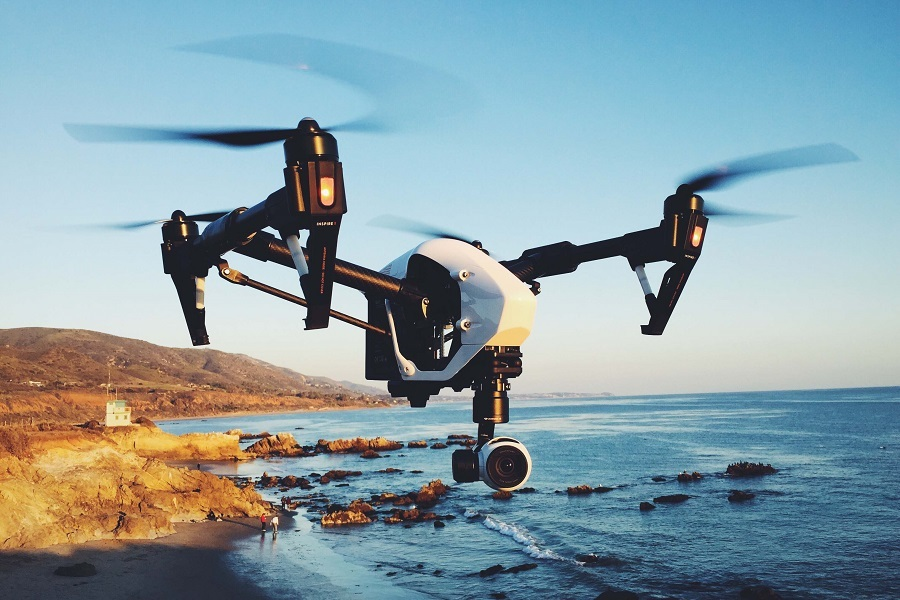
图13 飞翔中的大疆无人机
参考文献
[^1]Fehl G A ,Arnold T ,Good V .How B2B seller firms can leverage the power of brands with end users[J].Journal of Business Research,2025,186114952-114952.
[^2]GeL ,LiS .Price regulation, network externality, and product innovation strategies: A dynamic analysis[J].Managerial and Decision Economics,2024,45(7):4574-4589.
[^3]Yong C ,Gang C ,Jiayan X , et al.Sourcing diversification: Strategy selection, sourcing allocation and brand power[J].Computers & Industrial Engineering,2023,181
[^4]Mach 1 Lithium Launches High-Performance High-Capacity Lithium-Ion Batteries Line Compatible with Makita®, RYOBI®, and Milwaukee® Brand Power Tools[J].M2 Presswire,2023,
[^5]Gu ( Z ,Tayi K G .Consumer self‐design and brand competition[J].Production and Operations Management,2023,32(8):2420-2437.
[^6]Zihan L .Analysis of Brand Image Building of Chinese and US Agricultural Enterprises on Alibaba Based on a Corpus from the Multimodal Perspective[J].International Journal of Frontiers in Sociology,2023,5(4)
[^7]Šagovnović I ,Kovačić S . Traveling, Showing Status and Being Conspicuous: The Power of Destination as a Conspicuous Brand [J]. International Journal of Tourism Research, 2024, 26 (5): e2744-e2744.
[^8]Natalia C W ,Dwi M M ,Sefa B , et al.The power of e-recruitment and employer branding on Indonesian millennials’ intention to apply for a job[J].Frontiers in Psychology,2023,131062525-1062525.
[^9]Nosto and Attentive launch new partnership, giving brands power to create personalized commerce experiences for SMS-driven traffic[J].M2 Presswire,2022,
[^10]In today's world the power of personal brand has never been more important.[J].M2 Presswire,2022,
[^11]向斌, 宋智一. 一体化网络口碑传播机理研究——以大疆为例. 管理案例研究与评论. 2017;10(03):310-326.
[^12]方泽宏. 大疆创新：开启中国智造出海的新范式. 国际品牌观察. 2024;(Z2):28-32.
[^13]李梓源.基于共演视角的天生国际化企业发展战略研究[D].吉林财经大学,2023.DOI:10.26979/d.cnki.gccsc.2023.000440.
[^14]张瑶. 大疆的出海之路：以科技破局，缔造品牌口碑. 国际品牌观察. 2023;(13):63-66.
[^15]黄馨香, 向永胜, 沈舒寒, 周静, 魏紫馨. 后发企业创新追赶与超越案例研究. 科技创业月刊. 2021;34(11):15-19.
[^16]韩国运营商与大疆合作开发5G应用. 智能城市. 2018;4(12):73.
[^17]DJI大疆创新与哈苏相机建立战略伙伴关系. 中国摄影家. 2015;(12):154.
[^18]黄武华. 大疆消费级无人机法国市场营销策略研究. Master’s Thesis. 厦门大学; 2018.
[^19]徐佳. 大疆消费级无人机在美国市场的营销策略研究. Master’s Thesis. 新疆财经大学; 2021.
[^20]杨秋文. 大疆无人机国际营销案例研究. Master’s Thesis. 广西大学; 2019.
[^21]易丽华. 大疆公司农植保无人机市场竞争战略研究. Master’s Thesis. 华东师范大学; 2021.
[^22]杨华. 江西FT公司无人机市场营销策略研究. Master’s Thesis. 南昌大学; 2021.